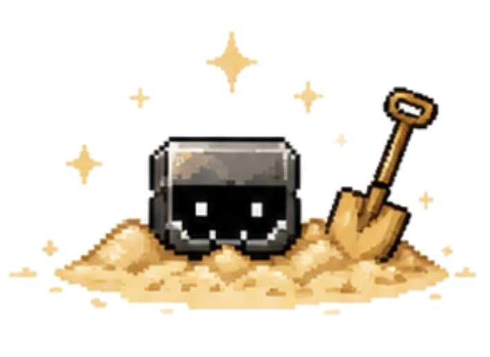

Blue links
open pages.Brown links
hide treasures.
✦ You bury it. Someone digs it up. ✦
📦 Creates a diggable link in the field.
Send this buried message
Serverless edition: the buried artifact is encoded inside the URL itself. No PHP or database is required.